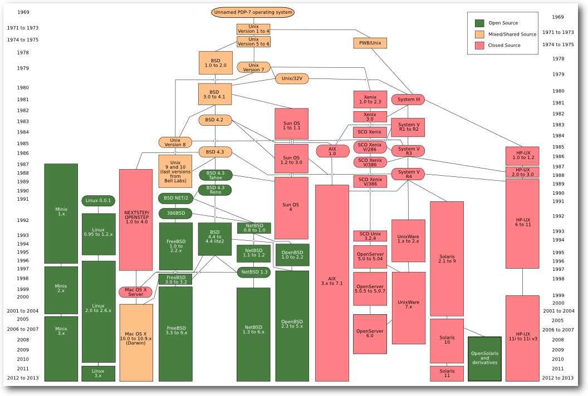
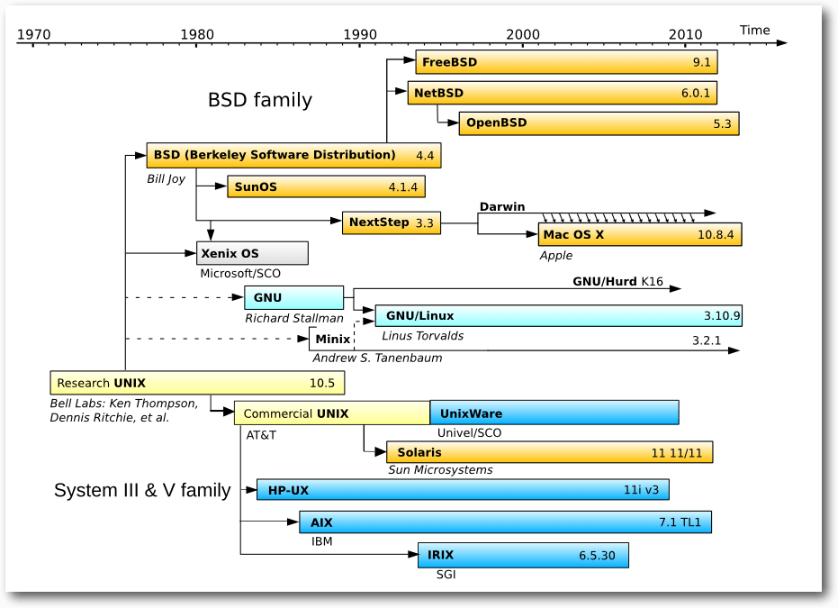
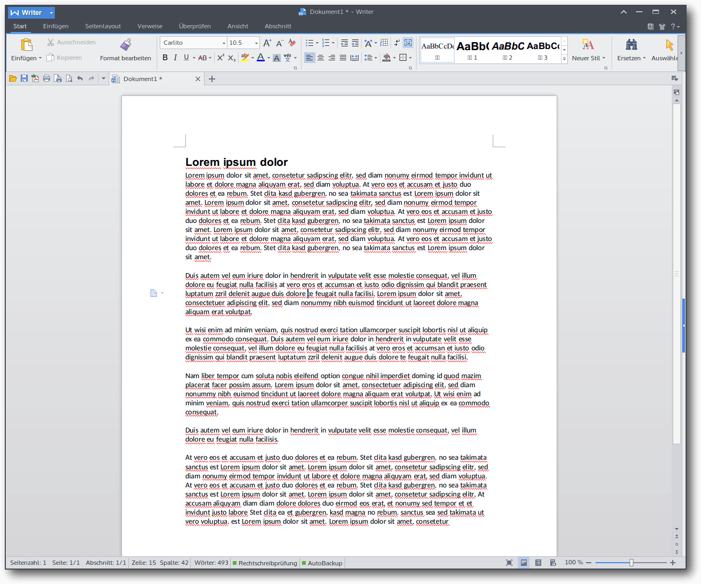
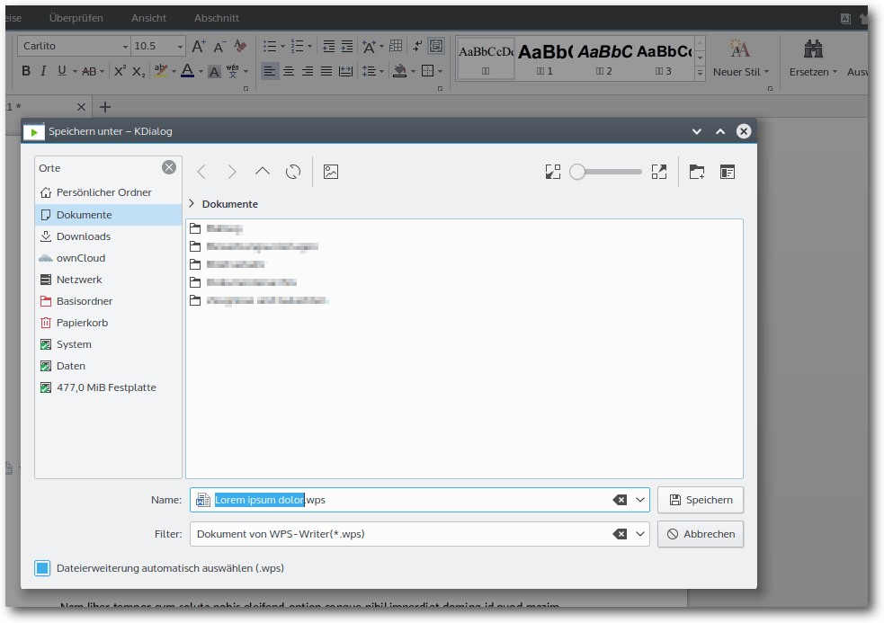
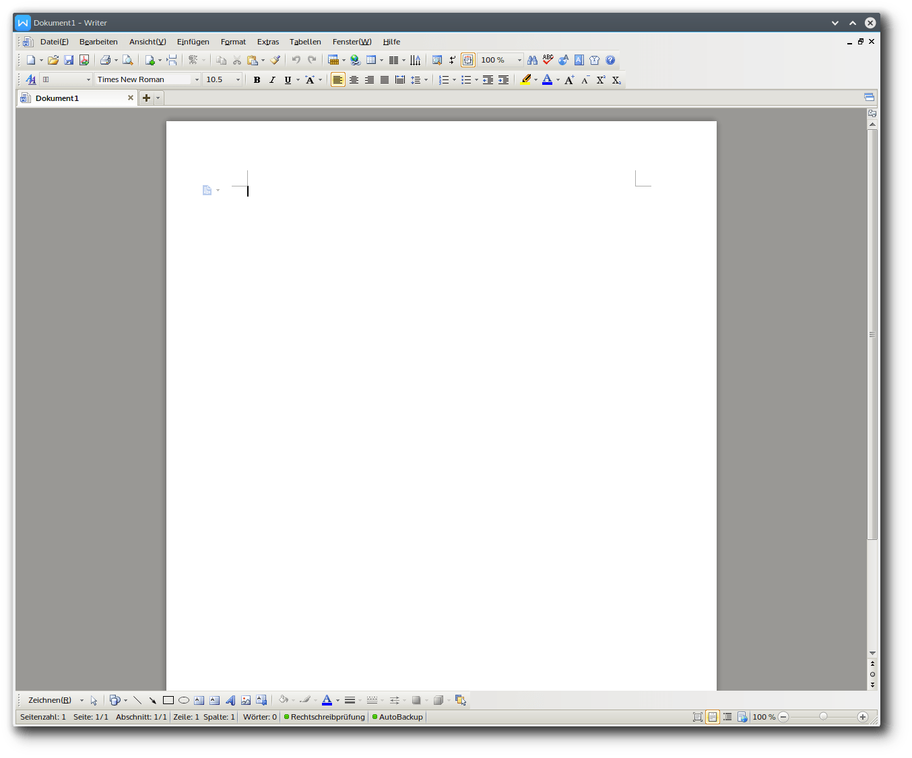
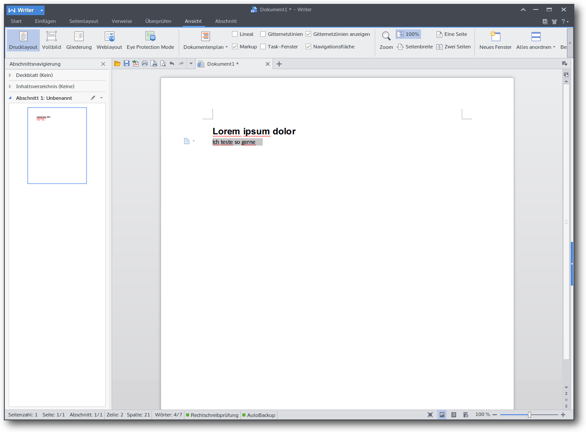

freiesMagazin November 2015
(ISSN 1867-7991)
Themen dieser Ausgabe sind u. a.
Eine Geschichte von LinuxIn diesem Artikel wird die historische Entwicklung von Linux von den ersten Schritten in den Bell Laboratories im Jahre 1965 bis zur Präsentation von Linux 1994 durch Linus Torvalds nacherzählt. (weiterlesen)
WPS Office im Test
Im Linux-Ökosystem gibt es eigentlich für jeden denkbaren Einsatzzweck verschiedene Programme. Das reicht von den Desktopoberflächen bis hin zum Terminal. Lediglich beim Kernel lassen einem die Distributoren selten eine Wahl – wobei Debian hier eine Ausnahme bildet. Eine Ausnahme ist hier der Office-Bereich. In diesen gehört die Office-Suite WPS Office, die in diesem Artikel vorgestellt wird. (weiterlesen)
I2P unter Ubuntu auf dem Raspberry Pi 2 installieren
Das „Invisible Internet Project“ ist ein Overlay-Netz, welches einen hohen Grad an Anonymisierung bietet. Aufgrund seines geringen Stromverbrauchs eignet sich ein Raspberry Pi hervorragend dazu, einen I2P-Router in Betrieb zu nehmen und damit das Netzwerk zu unterstützen. Der Artikel erklärt, wie man I2P unter Ubuntu auf dem Raspberry Pi installieren kann. (weiterlesen)
Zum Inhaltsverzeichnis
Inhalt
Linux allgemein
Eine Geschichte von Linux
Der Oktober im Kernelrückblick
Software
WPS Office im Test
I2P unter Ubuntu auf dem Raspberry Pi 2
Community
Rezension: Dokumentation mit Sphinx
Rezension: Software Testing – Concepts and Operations
Rezension: Entwurfsmuster von Kopf bis Fuß
Rezension: Minecraft: Redstone-Guide
Magazin
Editorial
Leserbriefe
Veranstaltungen
Vorschau
Konventionen
Impressum
Zum Inhaltsverzeichnis
Editorial
Rezensenten gesucht
Jeden Monat erhalten wir zahlreiche Bücher für Besprechungen angeboten. Die Rezensionen der Titel von Rheinwerk, mitp, O'Reilly und Wiley-VCH kann man dann im Magazin nachlesen, und doch schaffen es die freiwilligen Rezensenten längst nicht, alle interessanten Werke zu lesen. Selbstverständlich soll freiesMagazin nicht zu einem reinen Besprechungsorgan werden, denn die Artikel, die exklusiv im Magazin erscheinen, sind natürlich ein wichtiges Merkmal. Dennoch finden wir es schade, dass zu dem einen oder anderen Titel keine Rezension erscheinen kann. Beispiele hierfür sind „Gut gerüstet gegen Überwachung im Web – Wie Sie verschlüsselt mailen, chatten und surfen“ [1], „Design Patterns für die Spieleprogrammierung“ [2], „Spiele entwickeln mit Unity 5“ [3], „Hacks für die Digitale Fotografie – Digitalfotografie mit Arduino und Raspberry Pi“ [4]. Wenn Sie jetzt interessiert sind, diese Bücher – oder eines der zahlreichen anderen, die sich mit den Themen Programmierung, Hardware-Technik, Linux und Open Source beschäftigen, zu besprechen, schreiben Sie doch einfach eine E-Mail anProgrammierwettbewerb, die Zweite
Wie im letzten Editorial angekündigt, soll es auch dieses Jahr wieder einen Programmierwettbewerb geben. Aktuell ist daran gedacht, das Brettspiel „Mutant Meeples“ [5] (basierend auf „Ricochet Robots“) umzusetzen, bei den man Figuren auf einem Spielbrett bewegen muss, um so ein bestimmtes Feld zu erreichen. Leider ist nicht klar, ob diese Aufgabe ggf. zu schwer ist, um hierfür eine AI zu schreiben, die nicht nur stupide alle Möglichkeiten durchtestet (was zu viele wären). Wenn Sie das Spiel kennen, können Sie sich in den Kommentare oder per E-Mail melden und Ihre Meinung mitteilen, ob dies machbar ist oder zu aufwändig wird. Auch andere Ideen für einen Programmierwettbewerb sind willkommen. Je nach Rückmeldung und Aufwand der Engine-Implementierung kann es ggf. sein, dass der Wettbewerb sich dann doch ins nächste Jahr verschiebt. Und nun wünschen wir Ihnen viel Spaß mit der neuen Ausgabe. Ihre freiesMagazin-Redaktion Links[1] http://www.wiley-vch.de/publish/dt/books/ISBN978-3-527-76061-9/
[2] http://www.mitp.de/IT-Web/Programmierung/Design-Patterns-fuer-die-Spieleprogrammierung.html
[3] https://www.rheinwerk-verlag.de/spiele-entwickeln-mit-unity-5_3827/
[4] http://www.oreilly.de/catalog/digfotografiehacksger/index.html
[5] https://boardgamegeek.com/boardgame/109969/mutant-meeples
Beitrag teilen Beitrag kommentieren
Zum Inhaltsverzeichnis
Eine Geschichte von Linux
von Jakob Moser In diesem Artikel wird die historische Entwicklung von Linux von den ersten Schritten in den Bell Laboratories im Jahre 1965 bis zur Präsentation von Linux 1994 durch Linus Torvalds nacherzählt. Alles begann um 1965, als die Bell Laboratories – die Entwicklungsabteilung des damals großen Telekommunikationsunternehmens AT&T – zusammen mit dem MIT [1] und General Electric beschlossen, ein neues, proprietäres Betriebssystem für Großrechner zu entwickeln.Multics
Die Ideen und Konzepte [2] für das neue Betriebssystem namens „Multics“ waren gut, doch das System konnte sich nie durchsetzen, unter anderem, weil die Hardwareanforderung von Multics viel zu groß für die damaligen Computer waren. Das Entwicklerteam um Multics gab allerdings nicht auf. Sie versuchten vergeblich, die Bell Laboratories zum Kauf eines besseren Computers zu überreden, und entwickelten gleichzeitig Prototypen eines Dateisystems und einen primitiven Kernel. Doch auch dieses Projekt musste das Team einstellen, da die Maschinen, für die sie entwickelten, aus den Labors entfernt werden sollten.Unix
Beinahe wäre die Geschichte hier schon zu Ende gewesen, ehe sie so recht begonnen hatte, doch es kam anders. Ken Thompson, einer der Entwickler, wollte das für Multics geschriebene Spiel „Space Travel“ auf einen ungenutzten PDP-7-Minirechner portieren [3]. Da für die PDP-7 aber kein eigenes Entwicklungssystem vorlag und sich so die Portierung des Spiels wesentlich schwieriger gestaltete als erwartet, entwickelte Ken Thompson zusammen mit Dennis Ritchie, einem weiteren Beteiligten, eine Implementierung des von ihnen entwickelten Dateisystems samt Prozessmanagement und einigen Programmen, wie zum Beispiel einem Texteditor und einem Kommandozeileninterpreter (die Shell). Dieses System erhielt den Namen Unics („Uniplexed Information and Computing Service“), aus dem dann später Unix wurde. Unix wurde ab 1971 in einer weiteren Portierung für die PDP-11 (ein Nachfolger der PDP-7) im Patentbüro der Bell Laboratories eingesetzt. Außerdem wurde die „AT&T Unix Systems Group“ als offizielles Projekt der Bell Laboratories gegründet. Zeitgleich entwickelten Ritchie und Thompson eine Programmiersprache für die PDP-7 namens B. Der Nachfolger dieser Sprache für die PDP-11, der auch um diese Zeit von Ritchie und Thompson entwickelt wurde, hieß C. 1973 war die Neuerstellung von Unix in C, die die Portierung auf andere Rechner erleichtern sollte, abgeschlossen. Zur gleichen Zeit wurde Unix auf Anregung des Entwicklers Douglas McIlroy um das Konzept der Pipes erweitert, die erlauben, Ausgaben von einem Programm an ein anderes Programm weiterzugeben. Pipes sind heute ein Kernelement von Unix.Die Verbreitung von Unix
Bis 1973 lief Unix auf etwa 25 Rechnern innerhalb der Bell Laboratories, doch nach einem Vortrag auf einem Symposium der ACM, der ersten wissenschaftlichen Gesellschaft für Informatik, stieg das Interesse an Unix innerhalb wie außerhalb der Bell Laboratories gewaltig an. Da es AT&T aber aufgrund der Monopolstellung verboten war, neue Märkte – wie zum Beispiel den Computermarkt – zu betreten, wurde Unix samt Quellcode nur für den Preis der Datenträger verschiedenen Universitäten zur Verfügung gestellt. An der Universität von Kalifornien in Berkley war Unix besonders beliebt und wurde unter Ken Thompson, der dort eine Gastprofessur antrat, ab 1976 rapide weiterentwickelt – die Universität wurde damit zu einem wichtigen Zentrum der Unix-Entwicklung. Ab 1977 veröffentlicht die Universität eine eigene Distribution „Berkley Software Distribution“ oder einfach nur kurz „BSD“. 1978 benutzten schon mehr als 600 Computer Unix. 1979 wurde die letzte Unix-Version mit freiem Quellcode veröffentlicht, da AT&T nun doch eine kommerzielle Vermarktung versuchte.Die Kommerzialisierung von Unix
Auch Microsoft erwarb eine Unix-Lizenz und entwickelte Portierungen für diverse Prozessoren unter dem Namen Xenix. Xenix wurde aber 1987 an eine andere Firma verkauft, da man sich sonst selbst Konkurrenz zu einem Vorläufer von Windows NT gemacht hätte. 1983 betrat AT&T offiziell den Computermarkt, um ein auf Unix basierendes, unfreies Betriebssystem namens System V zu verkaufen. Gleichzeitig veröffentlichte die Universität von Berkley eine neue BSD-Version mit offenem Quellcode, aber keiner komplett freien Lizenz. Dies war der Beginn der „Unix-Kriege“. Sie bestanden vor allem aus der Gründung von verschiedenen Allianzen, die verschiedene Zwecke verfolgten und eigene Systeme herausbringen wollten. Aus diesen ging am Ende unter anderem eine standardisierte Schnittstelle für Unix namens POSIX [4] hervor. 1983 rief der US-amerikanische Programmierer Richard Stallman, verärgert über die Proprietarisierung von Unix, das GNU-Projekt ins Leben. Dieses bestand aus der Entwicklung eines komplett freien Betriebssystems samt dazu passender freier Lizenz, die Stallman 1985 veröffentlichte. Der Kernel des Systems, GNU Hurd, ist bis heute noch in Entwicklung, doch die GNU General Public License [5] [6], die das Ändern des Quellcodes und Weiterverbreitung der geänderten Programme jedem erlaubte, der das Programm weiterhin unter der GPL verbreitete, sollte einige Jahre später noch einmal eine große Rolle spielen. Unix und seine Nachfolger und Abspaltungen Minix.
© Eraserhead1, Infinity0, Sav_vas (CC-BY-SA-3.0)
{kind=link}
1987 entwickelte der amerikanische Informatiker Andrew S. Tanenbaum an der Freien Universität Amsterdam ein Unix-ähnliches Betriebssystem namens Minix. Die Entwicklung war dadurch motiviert, dass der Quellcode von Unix nicht mehr für die Universitäten zur Verfügung stand. Minix war Tanenbaums Reaktion auf die Unix-Kriege und die immer restriktiveren Unix-Lizenzen von AT&T. Auch die Lizenzen von Minix waren restriktiv, der Quellcode lag zwar offen; doch er durfte nicht verändert oder weiterentwickelt werden.
Linux
Am 2. Januar 1991 bestellte ein finnischer Informatiker namens Linus Benedict Torvalds sich einen 386er IBM-PC samt Minix. Es dauerte einen Monat, bis Minix bei ihm in Finnland eintraf. Innerhalb eines Monats arbeitete sich Torvalds in Minix ein, lernte dessen Fähigkeiten und Schwachstellen kennen. Besonders ärgerte ihn der Terminal-Emulator von Minix, den er brauchte, um auf den Universitätscomputer zuzugreifen. Er beschloss einen eigenen Terminal-Emulator zu schreiben. Etwa einen Monat später war dieses Projekt abgeschlossen; es folgte ein Festplatten- und ein Dateisystemtreiber, um Dateien hoch- und herunterzuladen. Das Projekt nahm während der weiteren Entwicklung betriebssystemähnliche Züge an. Als er am 3. Juli 1991 in der Minix-Newsgroup nach POSIX fragte [7], bot ihm Ari Lemmke, ein Assistent an der Technischen Universität Helsinki, FTP-Speicherplatz auf dem Universitätsserver für das Betriebssystem an, das er offenbar entwickelte. Am 25. August 1991 schrieb Linus Torvalds den bis heute legendären Usenet-Post, beginnend mit den Zeilen „Hello everybody out there using minix - I'm doing a (free) operating system (just a hobby, won't be big and professional like gnu) for 386(486) AT clones.“ („Hallo alle da draußen, die Minix einsetzen - Ich arbeite an einem (freien) Betriebssystem (nur ein Hobby, wird nicht groß und professionell sein wie GNU) für 386(486)AT-kompatible Rechner.“). [8] Auf diesem Zeitstrahl sind Linux, Minix und das GNU-System gut sichtbar.
© Guillem, Wereon, Hotmocha, Christoph S. (Public Domain)
{kind=link}
Am 17. September 1991 war die Betriebssystem-Shell fertig und Linus Torvalds stellte den Linux-Kernel in Version 0.01 mit 10.000 Zeilen Quellcode online. Ari Lemmke gefiel keiner der beiden von Torvalds vorgeschlagenen, teils selbstkritischen Namen Freax oder Buggix, deswegen nannte er den FTP-Ordner für den Kernel kurzerhand „Linux“. Torvalds war damit zuerst nicht einverstanden, akzeptierte den Namen aber bald. Anfangs war die kommerzielle Verwertung von Linux verboten. Doch noch 1991 besuchte Linus Torvalds einen Vortrag von Richard Stallman über das GNU-Projekt und verkündete im Januar 1992, das Projekt unter die GNU General Public License zu stellen. Mit der Veröffentlichung des Kernels 1.0 am 14. März 1994 und Torvalds' anschließender Präsentation davon, die sogar im Fernsehen übertragen wurde, endet diese Geschichte. Links
[1] http://web.mit.edu/multics-history
[2] http://multicians.org/history.html#tag11
[3] https://duplox.wzb.eu/endbericht/sabine.htm#toc4
[4] https://de.wikipedia.org/wiki/Portable_Operating_System_Interface
[5] http://www.gnu.org/gnu/manifesto.html
[6] https://de.wikipedia.org/wiki/GNU_General_Public_License
[7] https://groups.google.com/forum/#!original/comp.os.minix/T9SjMGTSpXk/0C2oixEP6qQJ
[8] https://groups.google.com/forum/#!original/comp.os.minix/dlNtH7RRrGA/SwRavCzVE7gJ
| Autoreninformation |
| Jakob Moser stieg vor einem Jahr von Windows auf Linux um. Er begann mit Ubuntu 14.04, seit kurzem nutzt er Arch Linux unter KDE Plasma 5. Dieser Artikel ist sein erster Beitrag zu einem Open-Source-Projekt. |
Beitrag teilen Beitrag kommentieren
Zum Inhaltsverzeichnis
Der Oktober im Kernelrückblick
von Mathias Menzer Basis aller Distributionen ist der Linux-Kernel, der fortwährend weiterentwickelt wird. Welche Geräte in einem halben Jahr unterstützt werden und welche Funktionen neu hinzukommen, erfährt man, wenn man den aktuellen Entwickler-Kernel im Auge behält.Linux 4.3
Die sonntägliche Veröffentlichung wurde auch bei Linux 4.3-rc5 [1] beibehalten. Der Stand fiel auf den ersten Blick erfreulich kompakt aus, allerdings hatte Torvalds keine Merges aus dem Netzwerkbereich aufgenommen, wodurch die Zahl der Änderungen etwas nach unten verzerrt wurde. Als Ausgleich dafür traten die ersten Probleme durch die neue Funktion strscpy() (siehe „Der September im Kernelrückblick“, freiesMagazin 10/2015 [2]) auf – obwohl sie bislang gar nicht genutzt wird. Allerdings wurden hier auf eine Funktion aufgebaut, die nicht in allen Architekturen zur Verfügung steht. Dadurch wiederum kam es zu Fehlern beim Kompilieren des Kernels für eben diese Architekturen. Das Problem wurde mit einer einfachen Definition für die PowerPC-Architektur behoben [3]. Auch die sechste Entwicklerversion [4] brachte nur einen kleinen Teil der sonst üblichen Netzwerk-Patches mit und fiel damit erneut sehr klein aus. Trotzdem konnte sie einen neuen Treiber aufweisen, der Unterstützung für die GPIO-Schnittstelle der UniPhier-Plattform ermöglicht, eine System-on-Chip-Architektur [5], die speziell für die Belange bildverarbeitender Anwendungen zugeschnitten wurde. Außerdem wurden bei DAX, das die direkte Verarbeitung von Dateien auf Flash-Massenspeichern unter Umgehung des eigentlichen Arbeitsspeichers ermöglicht, einige Fehler behoben, die zu Deadlocks [6] führen konnten. Ein Deadlock tritt auf, wenn ein Prozess Ressourcen, wie zum Beispiel einen Speicherbereich, gegen Zugriffe anderer Prozesse sperrt, jedoch auf einen anderen Prozess warten muss, der die selbe Ressource benötigt. Zwei vorherige „Verbesserungen“ für DAX führten zu diesem Verhalten und mussten nun größtenteils wieder zurückgenommen werden. Endlich kamen auch die lange vermissten Patches aus dem Umfeld des Netzwerkbereichs und sorgten wieder für einen größeren Patch für Linux 4.3-rc7 [7]. Allerdings waren hier keine Neuerungen dabei und die Korrekturen betrafen zumeist nur kleinere Probleme. So filterte bislang der Mellanox-Netzwerktreiber weiterhin Pakete anderer VLANs [8], über spezielle Kennzeichnungen der Netzwerkpakete getrennte Teilnetzwerke, heraus, selbst wenn die Schnittstelle in den Promiscious Mode [9] versetzt wurde. Dieser Modus soll eigentlich jede Filterung seitens Hardware und Netzwerkstack unterbinden und direkt an eine Anwendung für die weitere Verarbeitung weiterreichen. Normalerweise ignorieren Schnittstellen und Netzwerk-Stack Pakete, die nicht an den Rechner selbst gerichtet sind, mit nur wenigen Ausnahmen. Somit stellt der Promiscious Mode vor allem ein Mittel zur Fehlersuche dar.Misstöne
Anfang Oktober verkündete Intels Entwicklerin Sarah Sharp, die den Hauptanteil des USB-3.0-Treiber für Linux beigesteuert hatte, ihren Ausstieg aus der aktiven Entwicklung am Linux-Kernel (siehe „Der September im Kernelrückblick“, freiesMagazin 10/2015 [2]). Dies nahm Matthew Garrett, wie Sarah Sharp ebenfalls Kernel-Entwickler und bis Ende Oktober Mitglied im Technical Advisory Board, zum Anlass, um seine weitere Mitwirkung am Kernel zurückzufahren. Dabei bezieht er sich jedoch auf eigene Erfahrungen in Auseinandersetzungen mit Torvalds, wie beispielsweise dessen Anmerkung bezüglich spezifischer sexueller Praktiken zwischen Red Hat und Microsoft [10]. Und so wird Garrett Änderungen nicht mehr auf der Entwickler-Liste einreichen, sondern fortan in einem eigenen Kernel-Zweig pflegen, dort wird er sich nach eigener Aussage nur noch beteiligen, wenn er dafür bezahlt wird, jedoch nicht in seiner Freizeit. Die freie Software-Szene biete die Möglichkeit, diesen Ärger zu vermeiden und trotzdem zu tun, was ihn interessiere. Garrett arbeitete bereits für Canonical und Red Hat und ist zuletzt im Zusammenhang mit seinen Bemühungen, Linux, UEFI und Secure Boot unter einen Hut zu bekommen, ins Rampenlicht gerückt. Hier arbeitete er aktiv an Möglichkeiten mit, einen Linux-Kernel auch auf Systemen mit aktiviertem Secure Boot starten zu können. Links[1] https://lkml.org/lkml/2015/10/11/132
[2] http://www.freiesmagazin.de/freiesMagazin-2015-10
[3] https://git.kernel.org/cgit/linux/kernel/git/torvalds/linux.git/commit/?id=7a5692e6e533fd379081ab06fb58f3f5ee4d80bc
[4] https://lkml.org/lkml/2015/10/18/303
[5] https://de.wikipedia.org/wiki/System-on-a-Chip
[6] https://de.wikipedia.org/wiki/Deadlock_(Informatik)
[7] https://lkml.org/lkml/2015/10/25/2
[8] https://de.wikipedia.org/wiki/Virtual_Local_Area_Network
[9] https://de.wikipedia.org/wiki/Promiscuous_Mode
[10] https://lkml.org/lkml/2013/2/21/228
| Autoreninformation |
| Mathias Menzer (Webseite) behält die Entwicklung des Linux-Kernels im Blick, um über kommende Funktionen von Linux auf dem Laufenden zu bleiben. |
Beitrag teilen Beitrag kommentieren
Zum Inhaltsverzeichnis
WPS Office im Test
von Gerrit Kruse Im Linux-Ökosystem gibt es eigentlich für jeden denkbaren Einsatzzweck verschiedene Programme. Das reicht von den Desktopoberflächen bis hin zum Terminal. Lediglich beim Kernel lassen einem die Distributoren selten eine Wahl – wobei Debian hier eine Ausnahme bildet. Eine Ausnahme ist hier der Office-Bereich. Neben LibreOffice [1] gibt es kaum ernstzunehmende Konkurrenten im Linux-Umfeld. Apache OpenOffice darf mittlerweile als tot gelten [2]. Es gibt zwar eine Reihe kleinerer Editoren wie Abiword [3] oder auch Projekte wie Calligra Office [4], aber diese haben entweder einen enger gefassten Einsatzbereich oder sind schlicht noch nicht ausgereift.Der Status quo
LibreOffice steht in direkter OpenOffice/StarOffice-Tradition und blickt dadurch auf eine lange Geschichte zurück. Die Freigabe des Quellcodes von StarOffice Ende der 1990er bescherte dem Linux-Desktop endlich eine nutzbare Office-Suite. Ein direkter Nachfolger von StarOffice gehört seitdem zum Standard-Repertoire einer jeden Linux-Distribution. In dieser Tradition steht LibreOffice, das sich seit 2010 im Linuxumfeld weitestgehend durchgesetzt hat. Die Document Foundation hat es geschafft, einen regelmäßigen Releasezyklus zu etablieren und die Entwicklung in etwas ruhigere Bahnen zu lenken. Man könnte allerdings einwenden, dass die Entwicklung sehr ruhig geworden ist. Zwar gibt es halbjährlich eine neue Veröffentlichung, aber die Entwickler scheinen vor allem mit Aufräumarbeiten „unter der Haube“ beschäftigt zu sein. Waren vor dem Fork Projekte wie Renaissance zur Überarbeitung der Anwendungsoberfläche in Entwicklung, präsentiert sich LibreOffice heute noch ziemlich genauso wie beispielsweise StarOffice 6. Viele Bestandsnutzer wird es freuen, aber wer mal über den Tellerrand der Linux-Medien hinaus schaut, kann die hämischen Kommentare zum Erscheinungsbild lesen. Die meisten Anwender haben halt nicht mehr bis gestern Microsoft Office 97-2003 verwendet, sondern kommen von Office 2007 bis 2013 (demnächst 2016). Für den wachsenden mobilen Markt scheint man bei der Document Foundation auch noch keine Antwort gefunden zu haben, die letzte Version ist Pre-Alpha. Unter Berücksichtigung dieser im wahrsten Sinne des Wortes oberflächlichen Kritik ist natürlich Softmaker Office auch keine Alternative.WPS Office
Neben dem omnipräsenten LibreOffice gibt es aber noch eine weitere Office Suite für Linux: WPS Office [5] (vormals Kingsoft Office). Diese proprietäre Suite wird oft unter den Teppich gekehrt, möglicherweise auch weil sie in China entwickelt wird. Interessanterweise scheint es solche Berührungsängste im mobilen Segment nicht zu geben, wo Apps aus Asien inzwischen weit verbreitet sind. Vor allem im mobilen Bereich haben viele Anwender weniger Berührungsängste gegenüber „neuen“ Mitspielern auf dem Office-Markt. WPS hat hier schon länger eine recht gute Android-App [6] im Portfolio. Aber das nur am Rande. Für den Desktop-PC war WPS lange keine Alternative, weil WPS-Office nur in einer 32 bit-Version vorlag und die Entwicklung immer mal wieder pausierte. Die gegenwärtige Alpha19 von WPS-Office liegt jedoch sowohl in 32 bit als auch in 64 bit vor, ist paketiert für DEB, RPM und als tar.gz-Archiv.Installation
Das Debian-Paket installiert WPS Office sauber nach /opt. Nach der Installation finden sich im Startmenü Icons für das Schreibprogramm, die Tabellenkalkulation und das Präsentationsprogramm. Damit bietet WPS Office die Kernbestandteile einer Office Suite, aber etwas weniger als LibreOffice oder Microsoft Office. Dennoch dürfte der Funktionsumfang den meisten Anwendern reichen. Office-Datenbankprogramme wie Access oder Base haben schließlich eine zahlenmäßig eher limitierte Zielgruppe. Nach der Installation ist WPS Office erst einmal nur englischsprachig. Über die Optionen lässt sich eine deutsche Lokalisierung herunterladen. Die Einstellungen und lokalen Dateien legt WPS Office wie alle zeitgemäßen Programme im Homeverzeichnis des Benutzers unter .config und .local ab.Oberfläche
Das Schreibprogramm ist von Haus aus in einem modernen, an die von Microsoft bekannten Ribbons angelehnten Look gehalten. Die Übersetzung ist sehr weitreichend, aber es gibt immer noch Lücken, die dann mit englischen Phrasen gefüllt werden. Moderne Ansicht der Oberfläche.
Optisch integriert es sich hervorragend in das Breeze-Design von Plasma 5 und das Schriftbild ist subjektiv ein wenig besser als bei LibreOffice. Dies dürfte aber hochgradig abhängig von der jeweiligen Auflösung sein und den Sehgewohnheiten des jeweiligen Benutzers. WPS Office integriert sich auch über die Optik hinaus hervorragend in den Linux-Desktop. Es stehen alle Systemschriften zur Verfügung und es wird der native Dateidialog verwendet. 
Der Dateidialog von WPS Office.
Dies ist ein Punkt, den man gar nicht genug hervorheben kann. Schließlich müssen Nutzer von Kubuntu 14.04 LTS und Debian Jessie zurzeit mit dem funktionsarmen LibreOffice-Dialogfenster auskommen. Bei einem Programm, das letztlich auf Dateibasis arbeitet, ist ein nativer Systemdialog unglaublich wertvoll. Die Ribbonoberfläche hat den Vorteil, dass sich sehr viele Menüpunkte unterbringen lassen und die einzelnen Optionen durch unterschiedliche Größe hervorgehoben werden können. Herkömmliche Menübänder sind mit vielen Funktionen und Schaltflächen schnell überladen und lassen sich wenig intuitiv bedienen. Die Menübänder wurden ursprünglich für deutlich weniger Optionen entworfen. Hier lohnt sich ein Blick in das alte StarOffice 6. Nichtsdestoweniger kann man auch Anwender verstehen, die ihre liebgewonnene Oberfläche nicht aufgeben wollen. Intuitiv ist schließlich vor allem was gewohnt ist. WPS Office bietet deshalb einen klassischen Look, der sich an Word 97-2003 und Open/LibreOffice orientiert. 
Klassische Ansicht der Oberfläche.
Das ist eine schöne Geste, weil man so allen Anwendern gerecht wird. Eine Möglichkeit der Konfliktbeilegung, die im Linux-Umfeld leider viel zu selten genutzt wird, weil Entwickler oft den Königsweg gefunden haben wollen. WPS Office bietet ansonsten noch eine Reihe Funktionen, die man von Microsoft Office kennt und die in LibreOffice noch nicht implementiert sind. Besonders hervorzuheben sind hier die Seitenübersicht, wie man sie auch von den meisten Dokumentenbetrachtern kennt oder Tabs für verschiedene Dokumente. 
Der Navigationsbereich in der modernen Ansicht.
Kompatibilität
Dieser Punkt leitet über zum größten Schwachpunkt von WPS Office. Die Office Suite aus China kann neben dem eigenen Format nur die Formate von Microsoft lesen und schreiben. Das ist nach jahrelangem Open/LibreOffice-Gebrauch natürlich ein absolutes Ausschlusskriterium, aber auch in der Interaktion mit anderen Personen schwierig. Microsoft-Formate dominieren zwar immer noch, aber man bekommt auch immer häufiger freie Formate zu Gesicht. Am besten ist hier eine Software, die alles lesen und schreiben kann, da kann LibreOffice sicherlich seine Stärken ausspielen. Allerdings ist die Kompatibilität von WPS Office zu den OOXML-Dateien von Microsoft noch ein Stück besser als bei der freien Konkurrenz. Selbst komplexere Dateien sehen aus wie in Office 2010.Fazit
WPS Office ist sowohl vom Funktionsumfang als auch von der Oberfläche eine sehr ansprechende Office Suite. Sie zeigt, dass man nicht die Finanzmittel eines US-amerikanischen Großkonzerns wie Microsoft braucht, um eine zeitgemäße Office-Suite auf den Markt zu bringen. Die fehlende Unterstützung für freie Office-Formate ist für viele Linuxanwender aber sicherlich ein absolutes K.o.-kriterium, da hierdurch eine LibreOffice-Installation auf jedem Gerät unumgänglich ist. Hinzu kommt die proprietäre Lizenz von WPS Office. Sollte der Interoperabilitätsaspekt behoben werden, wäre ein Wechsel eine ernsthafte Option. In jedem Fall dürfte ernstzunehmende Konkurrenz dem Office-Bereich unter Linux nicht schaden, da hierdurch sinnvolle Ideen vorangetrieben werden können. Die Monopolstellung einer Software hat bisher dem Anwender selten etwas gebracht. Links[1] https://de.libreoffice.org/
[2] http://www.pro-linux.de/news/1/22514/stagnation-von-openoffice-erreicht-kritische-ausmasse.html
[3] http://www.abiword.org/
[4] https://www.calligra.org/
[5] http://wps-community.org/
[6] https://play.google.com/store/apps/details?id=cn.wps.moffice_eng
| Autoreninformation |
| Gerrit Kruse (Webseite) nutzt Linux seit 2007. Als Geisteswissenschaftlicher interessiert er sich für die Entwicklungen im Bereich der Textverarbeitung. |
Beitrag teilen Beitrag kommentieren
Zum Inhaltsverzeichnis
I2P unter Ubuntu auf dem Raspberry Pi 2 installieren
von Manuel Haake Das „Invisible Internet Project“ (kurz: I2P [1]) ist ein Overlay-Netz, welches einen hohen Grad an Anonymisierung bietet. Aufgrund seines geringen Stromverbrauchs eignet sich ein Raspberry Pi hervorragend dazu, einen I2P-Router in Betrieb zu nehmen und damit das Netzwerk zu unterstützen. Der Artikel erklärt, wie man I2P unter Ubuntu auf dem Raspberry Pi installieren kann.Grundlegendes
Der folgende Artikel versteht sich nicht als Einführung zum Thema I2P und setzt einige Begriffe voraus, die bereits in dem Artikel „I2P – Ein anynomes P2P-Netzwerk“ in freiesMagazin 05/2013 [2] beschrieben wurden. Vielmehr soll aufgezeigt werden, wie man auf dem Raspberry Pi mit seiner Besonderheit einer ARMv7-Architektur ein Ubuntu als Grundsystem einrichtet und darauf einen I2P-Router installieren kann. Nach erfolgreicher Umsetzung ist es möglich, den Router rund um die Uhr in Betrieb zu nehmen, ohne bei der nächsten Stromabrechnung negative Überraschungen zu erleben. Der 24/7-Betrieb ist natürlich nicht obligatorisch, bietet jedoch wegen der Funktionsweise des I2P-Netzwerkes einige Vorteile:- Das I2P-Netzwerk ist im Gegensatz zum TOR-Netzwerk vollkommen dezentralisiert. Nach jedem Start des eigenen I2P-Routers baut sich dieser über die Zeit seine eigene „Datenbank“ mit Informationen zu anderen Routern im Netzwerk auf. Eine längere Laufzeit führt zu einer besseren Integration des eigenen Routers ins Netzwerk.
- Der eigene Router wird von anderen Teilnehmern abhängig von seiner Laufzeit für die Datenweitergabe über fremde Tunnel unterschiedlich priorisiert bzw. favorisiert.
- Der Dauerbetrieb eines Routers erhöht die Stabilität und Leistungsfähigkeit des Netzwerkes.
Betriebssystemauswahl
Derzeit gibt es mit Ubuntu-Mate 15.04 und Ubuntu 14.04 LTS (Desktopumgebung wahlweise Xfce, LXDE oder KDE) zwei gut funktionierende Ubuntu-Varianten für den Raspberry Pi, deren Installation im Folgenden beschrieben wird. Man muss sich somit zunächst für eine der beiden Varianten entscheiden. Für die spätere Installation des I2P-Routers hat das zugrunde liegende System jedoch keinen Einfluss, da der Installationsprozess in beiden Fällen identisch ist. Auch in puncto Performance sind die beiden vorgestellten Ubuntu-Varianten durchaus vergleichbar, solange man von der Installation von KDE unter Ubuntu 14.04 LTS absieht und sich für eine der leichtgewichtigen Desktopumgebungen LXDE oder Xfce entscheidet. Für die meisten Nutzer sollte die zur Verfügung stehende Desktopumgebung den entscheidenden Faktor bei der Auswahl ausmachen. Es sei noch erwähnt, dass die Installation von Ubuntu-Mate 15.04 dem eher wenig erfahrenen Nutzern einfacher fallen dürfte, da der Installationsprozess hier komplett in einer grafischen Oberfläche geführt ist. Entscheidet man sich für Ubuntu 14.04 LTS, müssen die grafische Oberfläche und einige Treiber von Hand nachinstalliert werden.Voraussetzungen
Für die Installation wird benötigt:- Ein Raspberry Pi 2 Model B (die Vorgängermodelle der Raspberry Pi 1-Serie werden aufgrund der fehlenden ARM-v7 Architektur nicht unterstützt!)
- Eine ausreichend große und schnelle microSD-Karte (empfohlen: Class 10 mit min. 6 GB bei Nutzung mit Desktop-Oberfläche und 2 GB Swap-Datei)
- Stromversorgung für den Pi
- HDMI-Kabel zum Anschluss des Monitors
- Eingabegeräte
- Ethernet-Kabel oder kompatibler Wlan-Stick
Installation von Ubuntu Mate 15.04
Seit März 2015 gibt es eine Version von Ubuntu Mate 15.04 für den Raspberry Pi 2. Diese basiert auf der armhf-Version von Ubuntu und nicht (wie andere Ubuntu-Varianten für den Raspberry-Pi) auf Ubuntu Snappy Core. Der Installationsprozess ist sehr einfach und komplett in einer grafischen Oberfläche geführt. Während der erste Boot-Vorgang und der Installationsprozess noch recht langsam sind, läuft das System nach dem ersten Neustart im Anschluss der Installation deutlich performanter.Herunterladen und Entpacken des Images
Zunächst lädt man sich von der offiziellen Ubuntu-Mate-Homepage [3] das entsprechende Archiv herunter. Dieses enthält das Image, das später auf die microSD-Karte übertragen wird. Empfehlenswert aber optional ist die Prüfung des MD5-Hashwertes nach dem Download. Im Anschluss wird das heruntergeladene Archiv entpackt und man erhält die Datei ubuntu-mate-15.04-desktop-armhf-raspberry-pi-2.img.Image auf microSD-Karte übertragen
Um das Image auf die microSD-Karte zu schreiben, wird der Befehl dd verwendet. Bevor dies geschieht, muss zunächst mit eingebundener microSD-Karte geprüft werden, welchen Gerätenamen die Karte besitzt. Dazu kann man zum Beispiel den Befehl$ df -h
benutzen. Hat man den Gerätenamen (sdx) gefunden, kann das Image nach dem
Aushängen aller Partitionen der microSD-Karte auf die Karte geschrieben
werden:
# dd bs=4M if=/Pfad/zu/Image/ubuntu-mate-15.04-desktop-armhf-raspberry-pi-2.img of=/dev/sdx
Wichtig dabei ist, dass keine einzelne Partition (sdx1, sdx2 etc.),
sondern die gesamte Karte (sdx) beschrieben wird. Dieser Vorgang kann
sehr lange dauern und der Befehl gibt in dieser Zeit keinen Output zurück!
Falls man den Fortschritt der Operation sehen möchte, öffnet man ein zweites
Terminal und führt dort den folgenden pkill-Befehl aus:
# pkill -USR1 -n -x dd
Der Befehl dd wird zudem ohne weitere Rückfragen bzw. Sicherheitsabfragen
ausgeführt. Bei unachtsamen Aufrufen könnten eventuell wichtige Daten auf
anderen Geräten überschrieben werden!
Ext4-Partition vergrößern
Nachdem das Image auf die microSD-Karte übertragen ist, befindet sich dort eine kleine Ext4-Partition. Diese muss nun vergrößert werden, damit später genügend Platz für die weitere Installationen vorhanden ist. Am einfachsten ist dies mit GParted zu realisieren. Falls keine weiteren Partitionen auf der microSD-Karte benötigt werden, kann die Ext4-Partition auf den gesamten verfügbaren Platz vergrößert werden.System starten
Hat man das Image auf die microSD-Karte geschoben und die Ext4-Partition entsprechend vergrößert, kann man die microSD-Karte in den Raspberry Pi einlegen und der Pi kann gestartet werden. Hierzu gibt es keinen Schalter. Der Start erfolgt, sobald man dem Pi Strom zuführt. Nun folgt man dem grafischen Installationsprozess und definiert die gewünschte Sprache, Zeitzone sowie Benutzername und Passwort. Bei der Passworteingabe ist bei Sonderzeichen darauf zu achten, dass das Tastaturlayout im Installationsprozess noch auf Englisch gestellt ist. Nach dem ersten Systemstart kann das Layout über „System -> Einstellungen -> Hardware -> Tastatur“ angepasst werden. Nach erfolgreicher Installation sollte man das System zunächst auf den aktuellen Stand bringen und führt im Terminal die entsprechenden Befehle aus.# apt-get update
# apt-get upgrade
# apt-get dist-upgrade
# apt-get upgrade
# apt-get dist-upgrade
Installation von Ubuntu 14.04 LTS als Grundsystem
Die zugrunde liegende Ubuntu-14.04-LTS-Variante baut auf Ubuntu Core auf und kommt out of the box ohne grafische Oberfläche daher. Wahlweise kann jedoch Xfce, LXDE oder KDE nachinstalliert werden. KDE ist allerdings selbst mit abgeschalteten Desktop-Effekten sehr langsam und die Installation von Unity ist aufgrund der fehlenden 3-D-Beschleunigung nicht möglich. Nach einem direkten Vergleich hat sich LXDE subjektiv als performanteste Oberfläche herausgestellt. Die portierte Ubuntu-Version wurde von Ryan Finnie, einem Canonical-Mitarbeiter, erstellt und ist nicht offiziell. Sie wird auf Ryan Finnies Blog [4] sowie im Ubuntu-Wiki [5] zur Verfügung gestellt, jedoch mit dem ausdrücklichen Hinweis darauf, dass eine Versorgung mit Sicherheitsupdates im Gegensatz zum originalen LTS-Kernel nicht garantiert wird.Herunterladen und Verarbeiten des Image
Zunächst lädt man sich auf einer der beiden zuvor genannten Quellen das Image herunter und entpackt es. Im Anschluss überträgt man die so erhaltene Datei yyyy-mm-dd-ubuntu-trusty.img auf die SD-Karte, vergrößert die Ext4-Partition auf mindestens 6 GB und startet den Raspberry Pi mit der eingesteckten SD-Karte. Die genauen Arbeitsschritte hierbei sind den zuvor beschriebenen Schritten im Abschnitt „Ubuntu-Mate als Grundsystem“ oben zu entnehmen und können analog durchgeführt werden.Erste Anmeldung
Nach dem Start des Raspberry Pi mit der vorbereiteten microSD-Karte kann man sich mit dem Nutzername ubuntu und Passwort ubuntu in die Kommandozeile einloggen. Diesen voreingestellten Benutzer sollte man löschen und einen neuen Nutzer samt neuem Passwort erstellen. Dazu legt man zunächst den neuen Nutzer an und fügt ihn einigen Gruppen (darunter sudo) hinzu:# adduser BENUTZERNAME
# usermod -G sudo,audio,adm,video,plugdev BENUTZERNAME
Nun kann man sich als Nutzer ubuntu abmelden
# usermod -G sudo,audio,adm,video,plugdev BENUTZERNAME
$ logout
und sich mit dem neuen Benutzernamen und neuen Passwort anmelden. Im
Anschluss löscht man den voreingestellten Benutzer ubuntu samt
Home-Verzeichnis:
# deluser --remove-home ubuntu
In den nächsten Schritten werden nun noch einige Einstellungen vorgenommen,
die grafische Oberfläche eingerichtet und Raspberry Pi spezifische Treiber
nachinstalliert.
Locale-Einstellungen anpassen
Für die Benutzung des englischen Desktops mit deutscher Tastaturbelegung sollten zunächst folgende Befehle ausgeführt werden:# locale-gen en_US.UTF-8
# locale-gen de_DE.UTF-8
# dpkg-reconfigure keyboard-configuration
# locale-gen de_DE.UTF-8
# dpkg-reconfigure keyboard-configuration
System aktualisieren und gewünschten Desktop installieren
Nach einem Update mittels# apt-get update
# apt-get upgrade
# apt-get dist-upgrade
kann man sich je nach Wunsch eine grafische Oberfläche installieren. Dieser
Vorgang kann einige Zeit in Anspruch nehmen. Für die Installation gibt man
in die Konsole Folgendes ein:
# apt-get upgrade
# apt-get dist-upgrade
- Für LXDE:
sudo apt-get install lubuntu-desktop - Für Xfce:
sudo apt-get install xubuntu-desktop - Für KDE (aus Gründen der Performance nicht empfohlen): sudo apt-get install kubuntu-desktop
# shutdown -r now
neu gestartet werden. Beim erneuten Hochfahren kann man sich wie gewohnt an
der Benutzeroberfläche anmelden.
Zusätzlichen Grafiktreiber installieren
Mit fbturbo [6] ist ein Beschleunigter X.Org-Grafiktreiber für den Pi verfügbar, den man installieren und nutzen sollte. Die Installation erfolgt mit:# apt-get install xserver-xorg-video-fbturbo
Im Anschluss muss man eine xorg.conf erstellen und so konfigurieren, dass
der Treiber auch verwendet wird. Dazu installiert man beispielsweise den
Editor nano:
# apt-get install nano
und öffnet die /etc/X11/xorg.conf (Zu diesem Zeitpunkt existiert die
Datei noch nicht. Sie wird jedoch erzeugt, sobald man sie wie unten
beschrieben abspeichert.):
# nano /etc/X11/xorg.conf
Nun fügt man die folgenden Zeilen in die Datei ein und speichert sie mit der
Tastenkombination „Strg“ + „X“. Die Rückfrage wird nochmals mit „Y“ und
„Enter“ bestätigt:
Section "Device"
Identifier "Raspberry Pi FBDEV"
Driver "fbturbo"
Option "fbdev" "/dev/fb0"
Option "SwapbuffersWait" "true"
EndSection
Um zu prüfen, ob der Treiber auch verwendet wird, sucht man nach einem
Neustart in der Datei /var/log/Xorg.0.log nach dem Eintrag:
Identifier "Raspberry Pi FBDEV"
Driver "fbturbo"
Option "fbdev" "/dev/fb0"
Option "SwapbuffersWait" "true"
EndSection
(II)FBTURBO(0): processor: ARM Cortex-A7
Ist dieser vorhanden, wird der Treiber verwendet.
Im Anschluss sind noch ein paar Raspberry Pi-spezifische Programme zu
installieren und Links zu setzen. Details dazu finden sich bei Bedarf auf
der Download-Seite des
Images [7].
# apt-get install libraspberrypi-bin libraspberrypi-dev
# ln -s /usr /opt/vc
# apt-get install libraspberrypi-bin-nonfree
Nach einem Neustart ist der Pi fertig aufgesetzt und kann benutzt werden.
# ln -s /usr /opt/vc
# apt-get install libraspberrypi-bin-nonfree
Swap-Datei erzeugen
Die beiden beschriebenen Ubuntu-Installationen besitzen standardmäßig keinen Auslagerungsspeicher. Dieser kann optional z. B. mit dem Befehl dphys in einer Datei angelegt werden. Zu beachten ist, dass bei der Installation von dphys automatisch eine Swap-Datei im Verzeichnis /var erzeugt wird, die die doppelte Größe des verfügbaren RAM-Speichers besitzt, im Falle des Raspberry Pi Modell B also etwa 1,9 GB. Man sollte sich zuvor vergewissern, dass ausreichend Platz auf der Ext4-Partition vorhanden ist.# apt-get install dphys-swapfile
Installation von JDK 8 für ARM
Die Standard-Java-Installation auf Ubuntu nutzt auf dem Raspberry Pi keine Just-in-Time Compilation (JIT) und interpretiert Java-Code byteweise. Dies führt dazu, dass der I2P-Router zwar damit betrieben werden könnte, jedoch eine unnötig hohe Systemlast auftritt. Aufgrund der begrenzten Ressourcen des Raspberry Pi empfiehlt es sich, JDK 8 für ARM zu installieren. Diese Empfehlung findet sich auch auf der Projektseite von I2P [8]. Vor der Installation muss Java SE von der Oracle-Seite [9] auf den Pi heruntergeladen werden (Variante: 32bit-Linux ARM v6/v7 Hard Float ABI). Im folgenden Beispiel erfolgt die Installation in den Ordner /opt/java. Die heruntergeladene Datei jdk-8uVERSION-linux-arm32-vfp-hflt.tar.gz liegt im Home-Verzeichnis des Benutzers. Falls abweichende Pfade gewünscht sind, sind diese in den folgenden Codezeilen und bei späteren Einstellungen im I2P-Router entsprechend anzupassen. Zunächst wird das Installationsverzeichnis erstellt:# mkdir -p -v /opt/java
Im Anschluss wird das heruntergeladene Paket im Home-Verzeichnis entpackt:
$ tar xvzf ~/jdk-8uVERSION-linux-arm32-vfp-hflt.tar.gz
Dabei wird das Verzeichnis ~/jdk1.8.0_VERSION erstellt, welches nun in
das Installationsverzeichnis verschoben wird:
# mv -v ~/jdk1.8.0_VERSION /opt/java
Bei Bedarf kann die heruntergeladene Datei
~/jdk-8uVERSION-linux-arm32-vfp-hflt.tar.gz noch gelöscht werden, da sie
nicht mehr benötigt wird:
$ rm ~/jdk-8uVERSION-linux-arm32-vfp-hflt.tar.gz
Um die Installation abzuschließen, muss dem System noch mitgeteilt
werden, dass eine neue JVM vorhanden ist und wo sich diese befindet:
# update-alternatives --install "/usr/bin/java" "java" "/opt/java/jdk1.8.0_VERSION/bin/java" 1
Zudem muss dem System mitgeteilt werden, dass das JDK der neue systemweite
Standard sein soll:
# update-alternatives --set java /opt/java/jdk1.8.0_VERSION/bin/java
Damit ist die Installation abgeschlossen. Um zu testen, ob alles funktioniert hat, kann man sich die aktuell verwendete Java-Version anzeigen lassen:
$ java -version
java version “1.8.0_VERSION“
Java(TM) SE Runtime Enviroment (build 1.8.0_VERSION-b27)
Java HotSpot(TM) Client VM (build 25.VERSION-b27, mixed mode
java version “1.8.0_VERSION“
Java(TM) SE Runtime Enviroment (build 1.8.0_VERSION-b27)
Java HotSpot(TM) Client VM (build 25.VERSION-b27, mixed mode
Installation des I2P-Routers
Grundlegendes zu I2P und seiner Installation wurde bereits in freiesMagazin 05/2013 beschrieben [2]. Aufgrund der ARMv7-Architektur des Pi gibt es bei der Installation des I2P-Routers jedoch kleinere Abweichungen. Im Folgenden wird I2P in dem Ordner ~/i2pbin im Homeverzeichnis des Benutzers installiert. Ist ein anderer Pfad gewünscht, diesen bitte entsprechend anpassen.$ mkdir ~/i2pbin
Ist der Ordner erstellt, lädt man sich auf der
I2P-Projektseite [10] die Linux-Variante
i2pinstall_VERSION.jar herunter und kopiert sie in den erzeugten
Installationsordner.
Alternativ kann die Datei über das Terminal heruntergeladen werden (Versionsnummer anpassen):
$ cd ~/i2pbin
$ wget http://mirror.i2p2.de/i2pinstall_VERSION.jar
Jetzt wird die Installation gestartet:
$ wget http://mirror.i2p2.de/i2pinstall_VERSION.jar
$ cd ~/i2pbin
$ java -jar i2pinstall_VERSION.jar -console
Werden die drei nun folgenden Dialoge mit „1“, „Enter“ und „1“ bestätigt,
erfolgt die Installation in den Ordner, in dem auch die .jar-Datei liegt,
in diesem Fall also ~/i2pbin. Zudem wird im Homeverzeichnis ein
versteckter Ordner ~/.i2p angelegt.
Theoretisch könnte der Router nun über den Befehl
$ java -jar i2pinstall_VERSION.jar -console
$ ~/i2pbin/i2prouter start
gestartet werden. Aufgrund der ARM-Architektur funktioniert jedoch der
Java-Service-Wrapper nach der Standardinstallation nicht, weswegen man den
Router zunächst nicht über ~/i2pbin/i2prouter starten kann, sondern nur
über den direkten Aufruf von ~/i2pbin/runplain.sh. Hier ist also noch etwas Handarbeit nötig,
um auch ~/i2pbin/i2prouter zum Laufen zu bringen.
Hinweis: Bei Start des i2p-Routers über die runplain.sh wird der
Java-Service-Wrapper nicht benutzt und somit vom Router die Einstellungen in
der ~/i2pbin/wrapper.config ignoriert. Ärgerlich ist das beispielsweise
für diejenigen Nutzer, die z. B. aufgrund hoher Bandbreiteneinstellungen den
Wert wrapper.java.maxmemory erhöhen wollen.
Neuinstallation des Java-Service-Wrappers
Hierzu geht man wie auf der I2P-Projektseite [11] beschrieben vor. Zunächst lädt man sich von Tanuki Software [12] die aktuelle Version des Java-Service-Wrappers für Linux herunter (32bit-armhf und aus lizenzrechtlichen Gründen die Community-Variante!) und kopiert sie in das Homeverzeichnis. Anschließend wechselt man in einem Terminal in das Homeverzeichnis und entpackt den Wrapper (Versionsbezeichnung beachten):$ cd
$ tar xzf wrapper-linux-armhf-32-VERSION.tar.gz
Man erhält das Verzeichnis ~/wrapper-linux-armhf-32-VERSION. Jetzt werden
einige Dateien aus dem neuen Wrapper-Verzeichnis in den Installationsordner
von I2P kopiert (der erste cp-Befehl ersetzt die ausführbare Datei i2psvc durch den Wrapper):
$ tar xzf wrapper-linux-armhf-32-VERSION.tar.gz
$ cp ~/wrapper-linux-armhf-32-VERSION/bin/wrapper ~/i2pbin/i2psvc
$ cp ~/wrapper-linux-armhf-32-VERSION/lib/wrapper.jar ~/i2pbin/lib/
$ cp ~/wrapper-linux-armhf-32-VERSION/lib/libwrapper.so ~/i2pbin/lib/
Die Installation des Wrappers ist damit beendet. Vor dem Start des Routers
muss man in der Datei ~/i2pbin/wrapper.config noch den JDK 8 für ARM
Installationspfad angeben. Dazu editiert man die Datei wie folgt (die Kommentarzeichen # entfernen, den String
VERSION in jdk1.8.0_VERSION entsprechend anpassen):
$ cp ~/wrapper-linux-armhf-32-VERSION/lib/wrapper.jar ~/i2pbin/lib/
$ cp ~/wrapper-linux-armhf-32-VERSION/lib/libwrapper.so ~/i2pbin/lib/
# Java Application
# wrapper.java.command=java
# Specify a specific java binary:
set.JAVA_HOME=/opt/java/jdk1.8.0_VERSION
wrapper.java.command=%JAVA_HOME%/bin/java
# Gentoo uses the following:
Nun sollte der I2P-Router auch über den Befehl
# wrapper.java.command=java
# Specify a specific java binary:
set.JAVA_HOME=/opt/java/jdk1.8.0_VERSION
wrapper.java.command=%JAVA_HOME%/bin/java
# Gentoo uses the following:
$ ~/i2pbin/i2prouter start
gestartet werden können. Bei eventuell auftretenden Problemen kann ein Blick
in die Logdatei hilfreich sein, die sich in /tmp/wrapper.log befindet.
Damit ist die Installation des I2P-Routers abgeschlossen und er kann in
vollem Umfang genutzt werden.
Anregungen zur Optimierung
Die folgenden Tipps erläutern die gängigsten Möglichkeiten, die Lese- und Schreibvorgänge auf die verwendete microSD-Karte durch das System zu reduzieren, um somit die Lebensdauer der Karte zu erhöhen. Ihre Umsetzung ist optional und je nach weiterer Verwendung bzw. Auslastung des Raspberry Pi nicht immer ratsam.I2P Log-Dateien in Ram auslagern
Man kann die Log-Dateien des I2P-Routers in den RAM auslagern. Entscheidet man sich dafür, muss man in der Datei ~/i2pbin/i2prouter in der Variable I2PTEMP den Pfad angeben, in dem die zuvor angelegten RAM-Disk eingebunden wurde. Zudem werden die Variablen PIDDIR und LOGDIR angepasst:I2PTEMP="Pfad/zur/Ram-Disk"
PIDDIR="$I2PTEMP"
LOGDIR="$I2PTEMP/logs"
PIDDIR="$I2PTEMP"
LOGDIR="$I2PTEMP/logs"
Journaling deaktivieren
Über den Sinn und Unsinn dieses Schrittes kann man streiten. Letztendlich muss jeder Nutzer für sich selbst entscheiden, ob er die Gefahr eines möglichen Datenverlustes für den (eher geringen) Performance-Vorteil in Kauf nehmen möchte. Entscheidet man sich dafür, kann man das Journaling bei ausgebundener Raspberry-Pi-Systempartition wie folgt deaktivieren (die Partitionsbezeichnung sdx1 muss eventuell entsprechend angepasst werden):# tune2fs -O ^has_journal /dev/sdx1
Anschließend überprüft man, ob das Journaling tatsächlich deaktiviert wurde.
In diesem Fall sollte unter Filesystem features nun kein has_journal
mehr aufgeführt sein:
# tune2fs -l /dev/sdx1
Abschließend wird das Filesystem noch auch Fehler überprüft.
# e2fsck -f /dev/sdx1
Swap-Datei auslagern/deaktivieren/löschen
Das Schreiben von Daten aus dem Arbeitsspeicher in die Swap-Datei verursacht viele Schreibvorgänge und verschlechtert die Performance des Systems. Nach Möglichkeit sollte man das System so betreiben, dass ein Auslagerungsspeicher nicht nötig ist. In diesem Fall kann man die Swap-Datei deaktivieren bzw. löschen. Sollen auf dem System jedoch weitere speicherhungrige Programme laufen, kann man die Swap-Datei auch auf eine externe Festplatte auslagern, um die microSD-Karte zu schonen. Wie man diese 3 Varianten unter Verwendung von dphys realisiert, ist in der Manpage von dphys [13] beschrieben.Ältere I2P-Versionen installieren
Zunächst sei deutlich davon abgeraten, ältere Versionen des I2P-Routers zu installieren. Sollte dies dennoch nötig sein, muss bei I2P-Versionen kleiner 0.9.20 die Bibliothek jbigi noch selbst kompiliert werden. Sie optimiert kryptografische Operationen innerhalb des I2P-Routers und beschleunigt diese deutlich. Bei älteren Versionen liest der I2P-Installer die CPU-Version des Raspberry Pi nicht korrekt aus und verwendet somit die falsche vorkonfigurierte ARM-Version der jbigi-Bibliothek. Nähere Informationen hierzu sind dem ubuntuusers.de-Wiki [14] zu entnehmen.Trivia
Unabhängig davon, was man in den Weiten des I2P-Netzwerkes vor hat, sollte man sich stets bewusst machen, dass auch hier keine 100-prozentige Sicherheit und Anonymität gewährleistet werden kann. Zum einen befindet sich I2P noch in der Beta-Phase und ist mit (sehr grob geschätzten) 37000 Routern ein noch recht kleines Netzwerk. Zum anderen ist das Vorhaben, eine auf IP und TCP/UDP basierende Kommunikation komplett sicher und anonym zu gestalten, meines Erachtens nach eine Utopie. Diese Protokolle wurden in ihrem historischen Kontext schlicht nicht dafür geschaffen, dies zu gewährleisten. Es sind jedoch Ansätze wie beispielsweise I2P, die – richtig angewendet – das derzeit höchstmögliche Maß an Sicherheit und Anonymität gewährleisten können. Man kann also durchaus nach bestem Wissen und Gewissen dazu beitragen, diese (aktiv) zu unterstützen. Links[1] https://de.wikipedia.org/wiki/I2P
[2] http://www.freiesmagazin.de/freiesMagazin-2013-05
[3] https://ubuntu-mate.org/raspberry-pi/
[4] http://www.finnie.org/2015/02/16/raspberry-pi-2-update-ubuntu-14-04-image-available/
[5] https://wiki.ubuntu.com/ARM/RaspberryPi
[6] https://launchpad.net/~fo0bar/+archive/ubuntu/rpi2-staging/+build/7006288
[7] https://wiki.ubuntu.com/ARM/RaspberryPi#Installation
[8] https://geti2p.net/de/download
[9] http://www.oracle.com/technetwork/java/javase/downloads/jdk8-downloads-2133151.html
[10] https://geti2p.net/en/download
[11] https://geti2p.net/en/misc/manual-wrapper
[12] http://wrapper.tanukisoftware.com/doc/english/download.jsp#stable
[13] http://manpages.ubuntu.com/manpages/trusty/man8/dphys-swapfile.8.html
[14] https://wiki.ubuntuusers.de/Howto/I2P_auf_dem_Raspberry_Pi_2
| Autoreninformation |
| Manuel Haake nutzt seit vielen Jahren BSD- und Linux-Systeme. Er interessiert sich für Open-Source-Projekte zum Thema Kryptographie, Anonymisierung und Pentesting. |
Beitrag teilen Beitrag kommentieren
Zum Inhaltsverzeichnis
Rezension: Software-Dokumentation mit Sphinx
von Jochen Schnelle Sphinx [1] gilt im Python-Umfeld als der Quasi-Standard zum Erstellen von Dokumentationen von Software. Aber auch in anderen Programmiersprachen und Umgebungen erfreut sich Sphinx einer gewissen Beliebtheit. Das vorliegende Buch „Software-Dokumentation mit Sphinx“ [2] gibt einen umfassenden Einblick in die Nutzung dieses Tools. Redaktioneller Hinweis: Wir danken dem Autor des Buches, Jan Ulrich Hasecke, für die Bereitstellung eines Rezensionsexemplares. Die Popularität von Sphinx rührt daher, dass die Software eben speziell zur Erstellung von (Software-)Dokumentation entwickelt wurde und auch in Sachen Ausgabeformate recht flexibel ist. So ist die Druckvorlage für dieses Buch auch mit Sphinx erstellt worden.Was steht drin?
Zu Beginn des 224-seitigen Buchs wird die Installation von Sphinx erklärt, sowohl für Linux als auch für Windows und MacOS X. Es folgt ein kurzes Kapitel dazu, wie ein Dokumentationsprojekt angelegt wird, bevor die Erstellung der Dokumentation an sich erläutert wird. Der Autor gibt hier zuerst eine Einführung in reStructuredText [3], der Auszeichnungssprache, welche von Sphinx genutzt wird. Weitere Kapitel erklären dann, mit welchen Mitteln Dokumente strukturiert werden können, wie man Tabellen erstellt und wie Formeln, Grafiken und Graphen eingebunden werden können. Da Sphinx ursprünglich speziell für die Dokumentation von Software entwickelt wurde, erklärt das Buch natürlich auch, welche Mittel Sphinx dafür bietet. Der Schwerpunkt liegt hier auf Python, aber es gibt auch Erklärungen, die sich auf C/C++ und JavaScript beziehen. Außerdem wird gezeigt, wie man aus dem Dokument heraus auf Quellcode verweist, welcher bei GitHub oder Bitbucket liegt. Weitere Kapitel erklären, welche Möglichkeiten es zur Erstellung des Inhaltsverzeichnisses gibt und wie man ein Stichwortverzeichnis oder auch einen Glossar erstellt. Auch auf das Thema Mehrsprachigkeit von Dokumentationen wird kurz eingegangen. Das Überführen der fertigen Dokumentation in das gewünschte Ausgabeformat, und möglichen Optionen dabei, werden natürlich auch in mehreren Kapiteln behandelt. Der Schwerpunkt liegt hier auf den Formaten HTML, EPUB und LaTeX/PDF, weitere mögliche Formate werden aber auch zumindest angerissen. Den Abschluss des Buchs bildet ein recht ausführlicher Index, welcher das Nachschlagen von Informationen erleichtert.Für wen ist das Buch geeignet?
Das Buch ist für alle geeignet, die einen fundierten und umfassenden Einsteig in die Erstellung von Dokumentation mit Sphinx suchen. Erklärt wird alles, was benötigt wird, um Dokumente mit Sphinx zu generieren. Da das Buch aber auch fortgeschrittene Themen behandelt und auch die vielen Optionen des Tools recht ausführlich erläutert, kann es später auch immer wieder als Nachschlagewerk dienen.Wie liest es sich?
Insgesamt liest sich das Buch recht flüssig und kurzweilig. Der Autor versteht es sehr gut, Inhalte kompakt und verständlich zu erklären, sodass so gut wie keine Fragen offen bleiben. Wo immer passend und nötig, gibt das Buch Links auf Webseiten an, welche ergänzenden Informationen zu dem gerade Erläuterten geben. An vielen Stellen im Buch findet man kurze Beispiele zu der von Sphinx verwendeten Auszeichnungssprache und den Ergebnissen, welche durch diese erzeugt werden. Dies hilft das gerade Erklärte besser nachzuvollziehen und zu visualisieren. Alle Kapitel sind in sich abgeschlossen, sodass Kapitel zu Themen, welche für den jeweiligen Leser nicht von Interesse sind, ohne Probleme übersprungen werden können. Die Verständlichkeit des Buchs leidet darunter nicht.Fazit
Das Buch „Software-Dokumentation mit Sphinx“ ist ein rundum gelungenes Buch zu diesem Thema, welche sowohl eine gute Einführung bietet als auch später als Nachschlagewerk dienen kann. Grundsätzlich findet man wohl auch alle Information im Internet, jedoch nicht so kompakt zusammengefasst wie im Buch und auch nicht unbedingt in dieser Ausführlichkeit in deutscher Sprache. Wer sich mit Sphinx und dem Thema Software-Dokumentation auseinander setzen möchte, dem kann das Buch uneingeschränkt empfohlen werden. Redaktioneller Hinweis: Da es schade wäre, wenn das Buch bei Jochen Schnelle nur im Regal steht, wird es verlost. Die Gewinnfrage lautet: „Auch wenn Sphinx zu Dokumentation von Software sehr populär ist, so ist die Statue „Große Sphinx von Gizeh“ in Ägypten etwas bekannter. Welches markante Körperteil fehlt der Statue seit 1378?“ Die Antwort kann bis zum 8. November 2015, 23:59 Uhr über die Kommentarfunktion oder per E-Mail an| Buchinformationen | |
| Titel | Software-Dokumentation mit Sphinx [2] |
| Autor | Jan Ulrich Hasecke |
| Verlag | CreateSpace Independent Publishing Platform |
| Umfang | 224 Seiten |
| ISBN | 978-1497448681 |
| Preis | 24,51 Euro (Print), 8,66 Euro (E-Book) |
Links
[1] http://sphinx-doc.org/
[2] http://literatur.hasecke.com/sachbuecher/software-dokumentation-mit-sphinx
[3] https://de.wikipedia.org/wiki/ReStructuredText
| Autoreninformation |
| Jochen Schnelle (Webseite) hat Sphinx auch schon für die Dokumentation eigener Software-Projekte eingesetzt. |
Beitrag teilen Beitrag kommentieren
Zum Inhaltsverzeichnis
Rezension: Software Testing – Concepts and Operations
von Sujeevan Vijayakumaran Das Buch „Software Testing – Concepts and Operations“ [1] ist ein englischsprachiges Fachbuch, welches von den beiden Professoren Ali Mili und Fairouz Tchier geschrieben wurde. Redaktioneller Hinweis: Wir danken Wiley für die Bereitstellung eines Rezensionsexemplares.Was steht drin?
Das Buch unterteilt sich in fünf Teile mit insgesamt 16 Kapiteln. Die fünf Teile umfassen knapp 400 Seiten. Der erste Teil umfasst drei Kapitel und gibt einen Einstieg in die Thematik des Software Testings. Im ersten Kapitel geht es zunächst um Software Engineering an sich, im zweiten Kapitel werden Qualitätsattribute von Software beschrieben. Abgeschlossen wird der erste Teil mit dem dritten Kapitel, in dem es erstmals um Software Testing geht, ganz speziell um den Software Testing Lifecycle. Der zweite Teil dreht sich um die Grundlagen des Software Testings, beginnend mit den Software-Spezifikationen. Anschließend folgt ein weiteres Kapitel über die Korrektheit und die Verifikation von Programmen. Das sechste Kapitel handelt von den verschiedenen Fehlerarten. Abgeschlossen wird der zweite Teil mit einem Kapitel über „Software Testing Taxonomy“, welches systematische Test-Aktivitäten behandelt. Um Software zu testen, werden sehr häufig Testdaten benötigt. Das ist auch Thema des dritten Teil des Buches, beginnend mit einem Kapitel über die generellen Konzepte der Testdaten-Generierung. So gibt es verschiedene Arten von Testdaten, die etwa die Korrektheit bei korrekten und falschen Daten richtig feststellen oder auch um die Robustheit bei fehlerhaften Daten zu prüfen. Das neunte Kapitel behandelt die funktionalen Kriterien der Testdaten-Generierung. So kann man Daten generieren, indem man den Quellcode analysiert oder durch die Analyse des Programmes. Abgeschlossen wird die Thematik der Testdaten-Generierung mit einem Kapitel über die strukturellen Kriterien. Der vorletzte Teil behandelt das Deployment von Tests und der Analyse. Dies beginnt mit „Test Oracle Design“, in dem der Tester ein Programm anhand von der Spezifikation und Testdaten testen soll. Im Anschluss folgt im zweiten Kapitel die Erläuterung, wie man mit den generierten Testdaten einen Test Driver entwickelt. Bei der abschließenden Testausgaben-Analyse geht es prinzipiell darum, was man aus den Ergebnissen erkennen kann. Das Buch schließt mit einem Teil über Test-Management ab. So geht es zunächst um die gegebenen Metriken für das Testen und anschließend um verschiedene Software Testing Tools wie CppTest, Selenium, JMeter und JUnit. Das letzte Kapitel befasst sich mit dem Testen im Produktentwicklungszyklus.Wie liest es sich?
Das Buch wurde von zwei Professoren geschrieben, die an zwei verschiedenen Universitäten lehren. Daraus resultiert auch, dass das Buch als Lehrbuch angedacht ist und sich sehr von generellen IT-Fachbüchern unterscheidet. Es ist vollständig in Englisch verfasst und ist äußerst mathematisch. Jedes Kapitel beginnt mit einer kurzen Einführung in das Thema und anschließend folgt sehr viel Theorie, kombiniert mit hoher Mathematik. Personen mit mittelmäßigen Englisch- und Mathematik-Kenntnissen haben es eher schwierig, dem Buch etwas abzugewinnen. Ein gutes mathematisches Verständnis ist deswegen notwendig, weil das ganze Thema vor allem mathematisch bewiesen wird. Insbesondere muss ein Verständnis von Automaten und formalen Sprachen vorhanden sein.Kritik
Das komplette Buch umfasst größtenteils nur Theorie. Diese wird, wie schon zuvor erwähnt, anhand von mathematischen Funktionen erklärt. An vielen Stellen wird dies auch mittels Programmcode in der Sprache C erläutert. Jemand, der eher die Tools zum Testen sucht, der kann dem Buch kaum etwas abgewinnen, denn der Fokus liegt ganz klar auf dem theoretischen Verständnis des Software Testing – was sinnvoll ist, um zu verstehen, wie man Software korrekt testen muss, um sowohl funktionale Korrektheit, Stabilität und so weiter zu gewährleisten. Mit knapp 100 Euro ist der Preis des Buches sehr hoch angesetzt. Es richtet sich also eher an die Leute, die sich intensiv mit dem Thema beschäftigen und es im Detail auch in der Theorie mit allen mathematischen Grundlagen verstehen wollen. Für diese kleine Gruppe eignet sich das Buch ziemlich gut, für alle anderen ist es vermutlich eher nichts.| Buchinformationen | |
| Titel | Software Testing – Concepts and Operations [1] |
| Autor | Ali Mili, Fairouz Tchier |
| Verlag | Wiley, 2015 |
| Umfang | 400 Seiten |
| ISBN | 978-1-118-66287-8 |
| Preis | 99,30 Euro (gebunden), 89,99 Euro (E-Book) |
Links
[1] http://eu.wiley.com/WileyCDA/WileyTitle/productCd-1118662873,subjectCd-CSJ0.html
| Autoreninformation |
| Sujeevan Vijayakumaran (Webseite) beschäftigt sich hauptsächlich beruflich mit der Qualitätssicherung von Software, hat mit Mathematik aber nur am Rande zu tun. |
Beitrag teilen Beitrag kommentieren
Zum Inhaltsverzeichnis
Rezension: Entwurfsmuster von Kopf bis Fuß
von Stefan Wichmann Frage: „Kann ein Buch in so einer Aufmachung wirklich Wissen vermitteln?“ Die Antwort auf diese Frage soll die Rezension zu „Entwurfsmuster von Kopf bis Fuß“ [1] zeigen. Redaktioneller Hinweis: Wir danken dem O'Reilly-Verlag für die Bereitstellung eines Rezensionsexemplares. Der Titel „Entwurfsmuster von Kopf bis Fuß“ verheißt eine Fülle an Informationen unter Einbeziehung eines kompletten menschlichen Körpers. So umfasst dies nicht nur das Sehen, sondern auch das Greifen und Begreifen der Thematik und tatsächlich: Das Thema wird in Beispielen und Denkansätzen vermittelt, sodass nicht etwa eine Definition zum Entwurfsmuster im Mittelpunkt steht, sondern der Ansatz in Beispielen zu erklären, was ein Entwurfsmuster ist. Und doch ist eine Definition zum Entwurfsmuster im Buch enthalten: Zum Ende hin. So viel sei verraten: Ein Entwurfsmuster ist ein beispielhafter Lösungsansatz zu einem Problem, dass bereits schon einmal gelöst wurde. Es ist vergleichbar mit einem Programmcode, der verwendet wird, um das Rad nicht neu erfinden zu müssen, nur, dass ein Entwurfsmuster nicht wiederverwendbarer Programmcode ist, sondern eben mögliche Ansätze aufzeigt für eine optimale Lösungsfindung.Inhalt, Aufteilung und Stil des Buchs
Frei wiedergegeben handelt es sich bei der Umsetzung des Werkes um ein Buch zum Thema Entwurfsmuster, aufgebaut nach aktuellen Erkenntnissen der Kognitionswissenschaft. Das Cover warnt durch die Aufmachung und lädt zum neugierigen Blättern ein, obwohl der Text um „Jörgs Liebesleben“ und die nachfolgenden Überschriften des Inhaltsverzeichnisses etwas abschrecken. Das erste Kapitel erklärt den Buchaufbau und dient der Einführung. Eine Einführung in diese andere Art des Buchaufbaus tut not, denn schnell ergibt sich beim Durchblättern der Eindruck, neben dem Fachtext eine zwar perfekt umgesetzte Notizsammlung zu Entwurfsmustern und auch zu den verschiedenen Entwurfstypen vor sich zu haben, doch als Fachtext scheint es eher ungeeignet. Die Umsetzung mit handskizzierten Pfeilen und Schreibschrifteinzügen ist ungewöhnlich! Auch wirken die Überschriften zu sehr auf Kuschelkurs zum Schmunzelfaktor (Zitat: „Kaffee- und Tee-Klassen zusammenrühren.“) und selbst der Verweis auf die Seitenzahl („Sie sind hier -“ SeiteXY>) verwundert. Der Stil unterscheidet sich so grundlegend von anderen Fachbüchern, dass es eines Augenblicks bedarf, sich zu überwinden und das Buch ernst zu nehmen. Schnell zeigt sich allerdings, dass es sich lohnt. Statt ein staubtrockenes Fachbuch in die Ecke zu werfen, hält der Leser hier ein Werk in Händen, das ihn bei der Stange hält – und sei es durch eingefügte fiktive Mitstreiter, die ihren Gedanken Ausdruck geben: „Jetzt bloß nicht aufgeben! Diesen Code müssen wir…“ Beispiele anhand eines Kaugummiautomaten, der eher ausschaut wie zwei Spiegeleier in der Pfanne, lockern den Text ungemein auf. Begriffe sind erklärt, dem Leser wird sogar ein Trampelpfad gezeigt, mit dem er ggf. Bekanntes problemlos überspringen kann – und doch: Auf Seite 591 war das Beispiel zu klein abgedruckt, um es problemlos erfassen zu können. Trotzdem: Ein Buch zu diesem Thema kann langweilig geschrieben sein und alle Fakten berücksichtigen oder eben neue Wege einschlagen. Dies hier ist ein Buch, dass bereits durch den Aufbau besticht und das gut strukturierte Wissen tatsächlich an den Mann bzw. die Frau bringt.Umfang, Qualität und Zielgruppe
Bei diesem Buch geht es darum, das Thema Entwurfsmuster zu verstehen und anzuwenden. Trotz oder gerade durch die aufgelockerten Seiten ist der Umfang angemessen und ausreichend. Der Text ist sehr gut aufbereitet und ansprechend. An den richtigen Stellen findet sich eine auflockernde Grafik, eine Skizze oder eine handschriftliche Notiz, die sich der Leser sonst wohl selbst ins Buch geschrieben hätte. Insgesamt überzeugt das Buch durch die Verarbeitung, jedoch scheinen die Grafiken der jeweiligen Folgeseite etwas durch. Das Buch richtet sich an wissende Programmierer, die sich weiterentwickeln möchten und mit Entwurfsmustern die eigene Arbeit zu verbessern suchen. Hier zeigt sich nach den ersten gelesenen Seiten, dass all die handgemalten Zuordnungen und Hinweise helfen, den Sinn der trockenen Materie zu erfassen.Fazit
Um auf die Einstiegsfrage zurückzukommen, ob ein Buch in so einer Aufmachung wirklich Wissen vermitteln kann, ist festzustellen: Ja, es kann! Für alle, die sich dem Thema Entwurfsmuster nähern und schon Programmiererfahrung haben, gibt es eine Kaufempfehlung. Allerdings sei auch gewarnt, dass der Text nicht einfach nur „en bloc“ zu lesen ist. Die vielfältigen Pfeile und Randnotizen wollen auch beachtet werden. Es tut not, sich nicht nur in den Text, sondern auch in handschriftlich dargestellte Textblöcke zu vertiefen, was allerdings wiederum hilft, die Gedankenströme zu einem Wissenspool verschmelzen zu lassen. Von daher ist das Nutzen beider Gehirnhälften für visuelle und textliche Inhalte sicher ein guter Weg, auch wenn diese Form der Darstellung in der eigenen beruflichen Praxis allenfalls an einem Flipchart nutzbar ist und eben nicht für Entwurfsmuster. Redaktioneller Hinweis: Da es schade wäre, wenn das Buch bei Stefan Wichmann nur im Regal steht, wird es verlost. Die Gewinnfrage lautet: „Die Dreierregel für Entwurfsmuster besagt a) dass drei Entwickler ein neu entdecktes Entwurfsmuster mittragen müssen oder b) dass der Verfasser eines neuen Musters sich durch den Verkauf mindestens drei seiner Programme qualifiziert hat.“ Die Antwort kann bis zum 8. November 2015, 23:59 Uhr über die Kommentarfunktion oder per E-Mail an| Buchinformationen | |
| Titel | Entwurfsmuster von Kopf bis Fuß [1] |
| Autor | Eric Freeman & Elisabeth Robson mit Kathy Sierra & Bert Bates |
| Verlag | O’Reilly, 2. Auflage 2015 |
| Umfang | 654 Seiten |
| ISBN | 978-3-95561-986-2 |
| Preis | 49,90 Euro (Druck), 29,90 Euro (E-Book) |
Links
[1] http://www.oreilly.de/catalog/hfdesignpat2ger/
| Autoreninformation |
| Stefan Wichmann (Webseite) werkelt derzeit an seiner Webseite stefan-wichmann.de herum, veröffentlicht Bücher und schreibt gerne Rezensionen zu Software, Hardware und zu Büchern im Allgemeinen. Er ist unter der E-Mailadresse autor[AT]stefan-wichmann[DOT]de erreichbar. |
Beitrag teilen Beitrag kommentieren
Zum Inhaltsverzeichnis
Rezension: Let's Play Minecraft: Dein Redstone-Guide
von Volkmar Mai Über das Kultspiel Minecraft muss vermutlich nicht mehr viel gesagt werden. Eine seiner Besonderheiten ist die spieleigene „Elektrizität“ in Form des Redstone-Erzes, welches das Bauen semi- bis vollautomatischer Schaltungen und komplexe Mechanik aus einfachen Grundbausteinen erlaubt. Redaktioneller Hinweis: Wir danken dem mitp-Verlag für die Bereitstellung eines Rezensionsexemplares. Mit Redstone können so simple Dinge wie sich selbst öffnende Türen, aber auch funktionierende Digitaluhren und Spiele-im-Spiel (z. B. Pong oder Mine Sweeper) realisiert werden. In diesem Rahmen schickt sich „Let's Play Minecraft – Dein Redstone-Guide“ [1] an, den vorangegangenen „Praxis-Guide“ um tiefergehendes Redstone-Wissen zu ergänzen.Verspielte Zwillinge
Optisch gleicht der Redstone-Guide seinem älteren Bruder und teilt daher sowohl dessen ansprechendes, der Minecraft-Farbenfreude angepasstes Aussehen als auch das handliche Format. Auch die große Bilderfülle sorgt abermals für kurzweiliges Lesevergnügen – zudem für die nach hinten hin immer komplexer werdenden Redstone-Schaltungen eine umfangreiche Bebilderung unabdingbar ist. Neben dem Kapitelverzeichnis sorgt ein Schlagwortindex für schnelles Wiederauffinden der gesuchten Informationen, ebenso wie eine ausführliche Liste aller Schaltungskomponenten.Rotstein-Werke nach Blaupause
Das Buch wendet sich wie sein Vorgänger an ein jüngeres Publikum und duzt den Leser durchgehend, was jedoch nicht stört und sowohl dem Altersdurchschnitt der Minecraft-Spieler als auch der überwiegend lockeren Einstellung aller Altersklassen seiner Community entspricht. Der Autor Daniel Braun hält sich erneut nicht lange mit Grundlagen auf, sondern beginnt bereits nach 46 der 224 Seiten mit den ersten Baubeispielen. Diese sind sowohl nach Themengebieten wie Haustechnik, halb- und vollautomatischen Farmen, Bahnverkehr und Musik, als auch nach der steigenden Schwierigkeit sortiert. Als anspruchsvollste Projekte schließen ein Zählwerk mit digitaler Zahlenanzeige und kleine motorisierte Luftschiffe den Redstone-Guide ab.Wechselstrom der Gefühle
Wie der Praxis-Guide ist auch dieser Ratgeber auf dem aktuellen Stand von Minecraft 1.8. Dies zeigt sich am deutlichsten durch dessen neue Schleimblöcke, an denen andere Blöcke kleben bleiben und welche die Grundlage der erwähnten Luftschiffe sind. Ebenfalls erfreulich sind die große Bandbreite an Anwendungsbeispielen sowie einige sehr detaillierte Erläuterungen, z. B. der komplizierten Zustände des Tages- und Nachtlichtsensors. Die Schaltungen sind großflächig konzipiert, was zu deren Übersichtlichkeit beiträgt. Eine kompaktere Bauweise wäre zwar oft möglich, allerdings auf Kosten der Verständlichkeit. Außerdem bleibt dem Leser so auch nach Fertigstellung genug zum weiteren Tüfteln übrig. Im Schatten der Redstone-Fackeln findet sich leider erneut die gewisse Erklärungsarmut und fehlende Detailtreue, die bereits am Praxis-Guide kritisiert wurde (siehe freiesMagazin 07/2015 [2]). Einerseits werden zwar anfangs die diversen „Strom-“ bzw. Signalquellen wie R-Fackeln, Hebel und Druckplatten erklärt, jedoch z. B. nicht die verschiedenen Power-Zustände von Blöcken (stark und schwach), die vertikale Signalübertragung, das temporäre Ausbrennen von R-Fackeln bei Kurzschlüssen oder neben den vorhandenen Logik-Gattern weitere Standard-Komponenten wie Detektoren für steigende und fallende Signale (Rising/Falling Edge Detectors). Manche essentiellen Grundlagen finden sich nebenbei erwähnt in späteren Kapiteln, wären aber besser im vorderen Teil aufgehoben, so z. B. der zweite Modus des Komparators und die LIFO-Schaltung. In einem Ratgeber sollte ein größerer Grundlagen-Teil zu finden sein.Die Aufgabe bestimmt das Werkzeug
Für wen ist der Redstone-Guide geeignet? Wer Redstone-Technik von der Pike auf erlernen will, findet in diesem Buch zu wenig Grundlagenwissen. Hier sind die umfangreichen Wikis und Videos im Netz wahrscheinlich sinnvoller. Geht es hingegen um schnelle Ergebnisse ohne zu viel graue (bzw. rote) Theorie, wie es vermutlich bei jüngeren Minecraft-Fans der Fall sein dürfte, kann ich das Buch wärmstens empfehlen. Es macht sich gut im Bücherregal – eventuell neben seinem Kompagnon – und bietet leicht verständliche, vielfältige Redstone-Konstruktionen. Das beiliegende Poster ist etwas kleiner als jenes des Praxis-Guides und zeigt alle Rezepte der im Buch tabellarisch aufgelisteten Redstone-Komponenten. Eltern sollten wissen, dass das Buch auch die Konstruktion von Fallen, TNT-Werfern und einem Luftschiff mit abwerfbaren TNT-Bomben beschreibt und diese durchaus passend „Waffen“ nennt, mit denen man „Monster oder Gegner“ virtuell töten kann. Wer seinem Kind den Überlebensmodus von Minecraft versagt, weil man dort Monster und Tiere mit Schwert und Bogen erlegt, wird sich vielleicht auch an diesem Aspekt des Redstone-Guides stören. Redaktioneller Hinweis: Da es schade wäre, wenn das Buch bei Volkmar Mai nur im Regal steht, wird es verlost. Die Gewinnfrage lautet: „Mit welcher Minecraft-Version wurde der Rohstoff eingeführt, der heute Redstone heißt?“ Die Antwort kann bis zum 8. November 2015, 23:59 Uhr über die Kommentarfunktion oder per E-Mail an| Buchinformationen | |
| Titel | Let's Play Minecraft: Dein Redstone-Guide [1] |
| Autor | Daniel Braun |
| Verlag | mitp, 1. Auflage 2015 |
| Umfang | 224 Seiten |
| ISBN | 978-3-8266-9678-7 |
| Preis | 16,99 € (Druck), 12,99 € (E-Book) |
Links
[1] http://www.mitp.de/IT-Web/Lego-Games/Let-s-Play-Minecraft-Dein-Redstone-Guide.html
[2] http://www.freiesmagazin.de/freiesMagazin-2015-07
| Autoreninformation |
| Volkmar Mai spielt Minecraft unter Ubuntu Linux seit der Beta-Version 1.8 im Herbst 2011. Auf dem privaten Server einiger Freunde ist ein Redstone-Museum sein persönliches Steckenpferd. |
Beitrag teilen Beitrag kommentieren
Zum Inhaltsverzeichnis
Leserbriefe
Für Leserbriefe steht unsere E-MailadresseLeserbriefe und Anmerkungen
Rezension: Entwurfsmuster
-> Die Antwort auf diese Frage ist nicht ganz so leicht, da ein wenig missverständlich formuliert. Sicherlich wäre es besser, statt per Singleton auf Objekte zuzugreifen, die Objekte direkt mittels Dependency Injection von außen dem Objekt zuzuführen. Damit ließe sich komplett auf die Anwendung von Singletons verzichten. Dann gibt es das allgemeine Factory-Muster, wobei man eigentlich sagen kann, dass das Singleton-Muster auch nur ein Unterfall des Factorymusters ist, das eben nicht allgemein ein Objekt erzeugt (d.h. jedes Mal ein neues Objekt erzeugt, sondern nur dann, wenn noch gar keins vorhanden ist). Und dann gibt es natürlich auch noch das im Text angesprochene Multion-Muster, was eben nicht nur ein Objekt zurückgeben kann, sondern x Objekte (hierfür kann man aber auch einfach eine Map innerhalb der jeweiligen Klasse verwenden).Nils (Kommentar) <- Die Frage war zwar etwas freier formuliert, aber zielte in die richtige Richtung. Es wurde ein Pattern gesucht, was die gleiche Aufgabe hat wie ein Singleton, es nur anders umsetzt. Die Antwort war das Monostate-Pattern [1]. Ein Singleton-Objekt stellt sicher, dass es (und seine Daten) nur einmal im System existieren. Beim Monostate-Pattern kann ein Objekt mehrere Instanzen haben, die Daten und Zustände existieren aber nur einmal.
Dominik Wagenführ
Proprietär vs. Open Source
-> Ich fand schön, einen Artikel zu diesem Thema zu lesen. Wenn ich auch Anmerkungen dazu habe, so wäre es mir arg, wenn die dazu beitragen würden, dass Autoren aus Furcht vor Kritik nicht schreiben würden. Ich bin nämlich sehr froh um den Artikel! In der Hoffnung konstruktiv zu sein, nun meine Kommentare:- Was den Titel angeht, so war er mir zu unscharf, gerade auch in Anbetracht der Begriffserklärung, hätte er schon „Closed Source vs. Open Source“ heißen müssen. Etwas mehr Exaktheit und Klarheit hätte da gut getan.
- Folgende Aussage zu MacOS X finde ich zu stark vereinfacht: „Dieses Argument wird dadurch gestärkt, dass MacOS X unter Fachleuten als relativ unsicher gilt.“ Der Unterbau von OS X, Darwin, ist nämlich unixoid und freie Software, insofern sollte auf dieser Ebene eine mit GNU/Linux vergleichbare Sicherheitsqualität herrschen. Der referenzierte Artikel bezieht sich aber auf die oberen Schichten, die Closed Source bzw. einfach eine andere Art von Software sind. Ist denn GNU/Linux gegen die dort beschriebenen Probleme immun?
- Und meine dritte Anmerkungen zu folgendem Satz: „Aber auch so bleiben Zweifel, ob die Binärdateien aus diesem Quellcode gebaut wurden.“ Die Zweifel dürfen ruhig noch eine Ebene tiefer wurzeln, nämlich in der Frage, mit welchem Compiler die Binärdateien aus diesem Quellcode gebaut wurden. Dieser wird von Ken Thompson in seinem Turing-Award-Vortrag „Reflections on Trusting Trust“ gut verständlich nachgegangen [2].
Meillo (Kommentar) Links
[1] http://www.objectmentor.com/resources/articles/SingletonAndMonostate.pdf
[2] https://www.win.tue.nl/~aeb/linux/hh/thompson/trust.html
Die Redaktion behält sich vor, Leserbriefe gegebenenfalls zu kürzen. Redaktionelle Ergänzungen finden sich in eckigen Klammern. Beitrag teilen Beitrag kommentieren
Zum Inhaltsverzeichnis
Veranstaltungskalender
| Messen | ||||
| Veranstaltung | Ort | Datum | Eintritt | Link |
| OpenRheinRuhr | Oberhausen | 07.11.–08.11.2015 | – | http://www.openrheinruhr.de/ |
| BeGeistert 029 | Düsseldorf | 07.11.–08.11.2015 | 45 EUR | https://www.haiku-os.org/conference/2015_begeistert_029 |
| Linux Presentation Day | Linux Community | 14.11.2015 | frei | http://www.linux-presentation-day.de/ |
| BSides | Wien | 21.11.2015 | frei | http://bsidesvienna.at/ |
| LinuxDay | Dornbirn | 21.11.2015 | frei | http://linuxday.at/ |
| Chaos Communication Congress | Hamburg | 27.12.–30.12.2015 | – | https://events.ccc.de/ |
Vorschau
freiesMagazin erscheint am ersten Sonntag eines Monats. Die Dezember-Ausgabe wird voraussichtlich am 6. Dezember u. a. mit folgenden Themen veröffentlicht:- Ubucon 2015
- Rezension: Programmieren lernen mit Python
Konventionen
An einigen Stellen benutzen wir Sonderzeichen mit einer bestimmten Bedeutung. Diese sind hier zusammengefasst:| $: | Shell-Prompt |
| #: | Prompt einer Root-Shell – Ubuntu-Nutzer können hier auch einfach in einer normalen Shell ein sudo vor die Befehle setzen. |
| ~: | Abkürzung für das eigene Benutzerverzeichnis /home/BENUTZERNAME |
Impressum ISSN 1867-7991
freiesMagazin erscheint als PDF, EPUB und HTML einmal monatlich.Erscheinungsdatum: 1. November 2015
| Kontakt | |
| Postanschrift | freiesMagazin |
| c/o Dominik Wagenführ | |
| Beethovenstr. 9/1 | |
| 71277 Rutesheim | |
| Webpräsenz | http://www.freiesmagazin.de/ |
| Autoren dieser Ausgabe | |
| Manuel Haake | I2P unter Ubuntu auf dem Raspberry Pi 2 installieren |
| Gerrit Kruse | WPS Office im Test |
| Volkmar Mai | Rezension: Let's Play Minecraft: Dein Redstone-Guide |
| Mathias Menzer | Der Oktober im Kernelrückblick |
| Jakob Moser | Eine Geschichte von Linux |
| Jochen Schnelle | Rezension: Software-Dokumentation mit Sphinx |
| Sujeevan Vijayakumaran | Rezension: Software Testing – Concepts and Operations |
| Stefan Wichmann | Rezension: Entwurfsmuster von Kopf bis Fuß |
| Redaktion | |
| Christian Schnell | Matthias Sitte |
| Dominik Wagenführ (Verantwortlicher Redakteur) | |
| Satz und Layout | |
| Moritz Kiefer | Benedict Leskovar |
| Kai Welke | |
| Korrektur | |
| Daniel Braun | Frank Brungräber |
| Vicki Ebeling | Stefan Fangmeier |
| Mathias Menzer | Christian Schnell |
| Karsten Schuldt | |
| Veranstaltungen | |
| Ronny Fischer | |
| Logo-Design | |
| Arne Weinberg (CC-BY-SA 4.0 Unported) | |
Soweit nicht anders angegeben, stehen alle Artikel, Beiträge und Bilder in freiesMagazin unter der Creative-Commons-Lizenz CC-BY-SA 4.0 International. Das Copyright liegt beim jeweiligen Autor. Die Kommentar- und Empfehlen-Icons wurden von Maren Hachmann erstellt und unterliegen ebenfalls der Creative-Commons-Lizenz CC-BY-SA 4.0 International. freiesMagazin unterliegt als Gesamtwerk der Creative-Commons-Lizenz CC-BY-SA 4.0 Unported mit Ausnahme der Inhalte, die unter einer anderen Lizenz hierin veröffentlicht werden. Das Copyright liegt bei Dominik Wagenführ. Es wird erlaubt, das Werk/die Werke unter den Bestimmungen der Creative-Commons-Lizenz zu kopieren, zu verteilen und/oder zu modifizieren. Die xkcd-Comics stehen separat unter der Creative-Commons-Lizenz CC-BY-NC 2.5 Generic. Das Copyright liegt bei Randall Munroe.
Zum Inhaltsverzeichnis
File translated from TEX by TTH, version 3.89.
On 9 Nov 2015, 07:02.